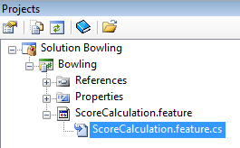

The SpecFlow team recently released version 1.7 and with it they included support for SharpDevelop 4.0. SpecFlow is an open source framework that you can use to do Behaviour Driven Development (BDD) on .NET. It allows you to bind business requirements to the code. Let us take a look at how SpecFlow integrates with SharpDevelop.
Download and install the following:
If SharpDevelop is installed first then the SpecFlow installer will detect SharpDevelop, as shown in the screenshot below.
The installer will then add a set of SpecFlow templates to SharpDevelop. It will also install a SharpDevelop addin which you will need to register using the addin manager. To register the SpecFlow addin start SharpDevelop and from the Tools menu select AddIn Manager. This will open the AddIn Manager dialog.
Click the Install AddIn button and browse to the SpecFlow installation folder. The default installation folder for SpecFlow is C:\Program Files\TechTalk\SpecFlow. In this folder find the TechTalk.SpecFlow.SharpDevelop4Integration.addin file, select it and click the Open button. The SpecFlow addin should then be displayed in the AddIn Manager dialog.
Restart SharpDevelop so the SpecFlow addin is loaded and is ready to be used.
Now let us take a look at how to use SpecFlow with SharpDevelop.
Here we will follow the workflow that is shown on the SpecFlow web site. This workflow looks at creating a bowling game using SpecFlow.
In SharpDevelop create a new C# class library project called Bowling. Right click the project just created and select Add New Item. In the New File dialog open the SpecFlow category and select the SpecFlow Feature template. Change the filename to be ScoreCalculation.feature. Click the Create button to save the file.
Replace the existing text in the feature file created with the text shown below.
Feature: Score Calculation In order to know my performance As a player I want the system to calculate my total score Scenario: Gutter Game Given a new bowling game When all of my balls are landing in the gutter Then my total score should be 0 Scenario: All Strikes Given a new bowling game When all of my rolls are strikes Then my total score should be 300
This is the specification for one part of the game. It is written in a language called Gherkin which gives you a user friendly way to specify a set of behaviours that your application should have. More information about the Gherkin language can be found on the Gherkin wiki.
Now select this feature file in the Projects window, right click and select Properties. In the file properties change the Custom Tool to be SpecFlowSingleFileGenerator.
Now every time you save the feature file a new file will be auto-generated.

If you open this generated file you will see that it contains a class that has two NUnit tests.
To run the unit tests you will need to add a reference to NUnit and SpecFlow to the project. In the Projects window, right click your project and select Add Reference. Select the .NET Assembly Browser tab and browse to the NUnit.Framework.dll file that can be found in the SharpDevelop folder C:\Program Files\SharpDevelop\4.0\bin\Tools\NUnit and add that file as a reference. Do the same for the TechTalk.SpecFlow.dll file which can be found in the C:\Program Files\TechTalk\SpecFlow folder.
Now create a new file called BowlingSteps.cs and copy the following code into it.
using System;
using NUnit.Framework;
using TechTalk.SpecFlow;
namespace Bowling
{
[Binding]
public class BowlingSteps
{
private Game _game;
[Given(@"a new bowling game")]
public void GivenANewBowlingGame()
{
_game = new Game();
}
[When(@"all of my balls are landing in the gutter")]
public void WhenAllOfMyBallsAreLandingInTheGutter()
{
for (int i = 0; i < 20; i++)
{
_game.Roll(0);
}
}
[When(@"all of my rolls are strikes")]
public void WhenAllOfMyRollsAreStrikes()
{
for (int i = 0; i < 12; i++)
{
_game.Roll(10);
}
}
[Then(@"my total score should be (\d+)")]
public void ThenMyTotalScoreShouldBe(int score)
{
Assert.AreEqual(score, _game.Score);
}
[When(@"I roll (\d+)")]
public void WhenIRoll(int pins)
{
_game.Roll(pins);
}
[When(@"I roll (\d+) and (\d+)")]
public void WhenIRoll(int pins1, int pins2)
{
_game.Roll(pins1);
_game.Roll(pins2);
}
[When(@"I roll (\d+) times (\d+) and (\d+)")]
public void WhenIRollSeveralTimes2(int rollCount, int pins1, int pins2)
{
for (int i = 0; i < rollCount; i++)
{
_game.Roll(pins1);
_game.Roll(pins2);
}
}
[When(@"I roll the following series:(.*)")]
public void WhenIRollTheFollowingSeries(string series)
{
foreach (var roll in series.Trim().Split(','))
{
_game.Roll(int.Parse(roll));
}
}
[When(@"I roll")]
public void WhenIRoll(Table rolls)
{
foreach (var row in rolls.Rows)
{
_game.Roll(int.Parse(row["Pins"]));
}
}
}
}
The BowlingSteps.cs file shown above implements the scenarios defined in the feature file and will be used by the unit tests to verify the implementation works as expected.
The only bit that is missing is the code that implements the bowling game logic. Create a file called Game.cs and copy the code shown into it.
namespace Bowling
{
public class Game
{
public void Roll(int i)
{
}
public int Score {
get { return -1; }
}
}
}
The Game.cs file contains the main Game class that implements the logic that we are going to test. Currently this code is incorrect so we are expecting the unit tests to fail.
In the Unit Tests window (View | Tools | Unit Tests) click the Run all tests toolbar button. All the tests should fail as shown below.
Now we need to fix the tests. The GutterGame test is the easiest to get working. Edit the Game class and change the Score property so it returns 0.
namespace Bowling
{
public class Game
{
public void Roll(int i)
{
}
public int Score {
get { return 0; }
}
}
}
Now when you run the unit tests again the GutterGame test will pass.
The next step would be to change the Game class so the AllStrikes unit test will pass. Then you could define more scenarios in feature files to cover more functionality that you want the bowling game to have. Then you would go through the process just described until you have a working solution that meets all the requirements. These steps are not shown here but hopefully you get the idea.
We have looked at how SpecFlow integrates with SharpDevelop and walked through the process of defining a set of scenarios that our application should have, creating unit tests to check the scenarios are implemented correctly and finally implementing the application logic so the unit tests pass.
More information on SpecFlow can be found on the SpecFlow web site and on the SpecFlow GitHub wiki.